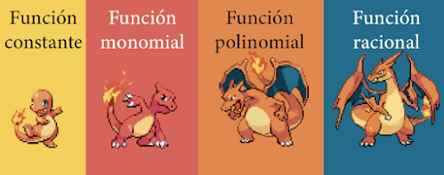

Funciones
Conceptos fundamentales
Introducción
Seguramente hemos escuchado en repetidas ocasiones a nuestro profesor de matemáticas diciendo que las funciones son el objeto más importante que podemos estudiar en un curso de precálculo, y efectivamente, cuando nos enfrentamos a clases de Cálculo (particularmente Cálculo I) descubrimos que la importancia de esta herramienta nunca se deja por debajo de algún otro objeto matemático.
Ya que hemos comprendido un poco mejor cómo se comportan y operan los números reales, a partir de este punto del curso estudiaremos la forma en la que interactúan algunas entidades matemáticas que relacionan a diferentes conjuntos de números reales entre sí. A estas entidades se les conoce con el nombre de función. Sin embargo, no hay que creer que las funciones solo relacionan números reales, que son un tema obligatorio a estudiar desde la escuela secundaria, que siempre tendrán una gráfica ideal formada por una curva continua en el plano, o que se denotan por \(f(x)\), \(y\), \(f(t)\), \(g(x)\), etc.

¿Recordará el lector este juguete?
Estamos prácticamente seguros que la respuesta es afirmativa. Este juguete consiste en relacionar y luego encajar una figura de plástico con una y solo una de las múltiples cavidades con las que cuenta. El juguete es un claro ejemplo de que el concepto intuitivo de función está presente en nuestra cotidianidad desde la educación preescolar.
En el ámbito de la ciencia existen múltiples en las que se relacionan distintas magnitudes, una dependiente de la otra: tiempo-desplazamiento temperatura-presión, intensidad del sonido-distancia, etc. A estas correspondencias que relacionan los valores de algunas magnitudes con los valores de otras es a lo que nos referimos intuitivamente como una función. Al conjunto \(A\) de donde se toman los valores independientes se le conoce como el dominio de la función, y al conjunto \(B\) de los valores dependientes le conocemos como el contradomio de dicha función.
Las características más importantes de una función están pautadas en la definición formal que enunciaremos más adelante. Sin embargo, ya podemos adelantar que en una función todo el dominio debe participar y cada uno de sus elementos deberá estar relacionado con un solo elemento del contradominio, mientras que no todos los elementos del contradominio provendrán de uno del dominio, recordando el juguete: ¿qué ocurre con las cavidades que no rellenamos a falta una figura extraviada? Todas las cavidades están ahí, que sean ocupadas dependerá de las condiciones con las que esté definida nuestra función.
Conceptos fundamentales
En esta sección nos ocuparemos de enunciar las definiciones rigurosas que habrá que conocer para comprender cómo se comportan las funciones, particularmente en matemáticas. Intuitivamente, ya se dijo que una función es un objeto matemático (una regla, quizás) que asigna elementos de un conjunto a elementos de otro. Por ejemplo, la función que a cada número lo asigna con su cuadrado toma a cualquier número real \(x\) y lo asigna con el real positivo \(x^2\). Esto se suele escribir \(f(x)=x^2\), leído "efe de equis", donde \(f(x)\) designa al número que le corresponde al valor \(x\). Así, \(f(2)\) designaría al número correspondiente al \(2\), que es \(4\) en este caso. Para casos de mayor complejidad, esta regla de correspondencia se expresa con una expresión explícita, e.g. $$f(x)=\frac{x^3+3x+5}{x^2+1}$$ Ya teniendo estas nociones intuitivas, formalizaremos la definición.
Definición. Sean \(A\) y \(B\) dos conjuntos no vacíos cualesquiera. Una función \(f:A\to B\) (de \(A\) en \(B\)) es un conjunto de pares ordenados \((x,y)\) que cumple las siguientes dos condiciones:
- \(\forall x \in A \;\exists y \in B:\, (x, y) \in f\)
- \(\forall x\in A,\,\forall y_1,y_2\in B,\,[(x,y_1)\in f\land (x,y_2)\in f\implies y_1=y_2]\)
Definición. Si \(f: A \rightarrow B\), para cada elemento \(x \in A\) denotamos con \(f(x)\) al único elemento \(y \in B\) que le corresponde, es decir, \(y=f(x)\) cuando \((x,y)\in f\). Se le denomina regla de correspondencia de una función \(f\) a la expresión \(f(x)\) que define la asignación de elementos.
Definición. La gráfica de una función \(\text{Gr}(f)\) es el lugar geométrico en el plano definido por \(\text{Gr}(f)= \{(x,y)\in\mathbb{R}^2\,|\, (x,y)\in f\}\), i.e. los puntos del plano que cumplen con la regla de correspondencia de la función.
Así, nos atreveremos a afirmar que los cinco elementos que caracterizan a una función son
- Dominio
- Contradominio
- Imagen
- Regla de correspondencia
- Gráfica
Funciones Algebraicas
Las funciones de mayor prominencia en nuestro curso son las denominadas funciones algebraicas. A grandes rasgos, las funciones algebraicas están compuestas por constantes y la variable \(x\), combinadas mediante la suma, el producto y la división, así como raíces. Como si de Pokémon se tratara, veremos que las funciones algebraicas irán evolucionando al agregar
La función más simple es la que asigna el mismo número a todos los elementos del dominio. Esta es la llamada fucnión constante , y su regla de correspondencia es \(f(x)=c\) con \(c\in\mathbb{R}\).
El paso siguiente sería agregar variables a la constante. Se le denomina función monomial a las de la forma \(f(x)=ax^n\), con \(n\in\mathbb{N}\) y \(a\in\mathbb{R}\).
Al sumar estos monomios se forma un polinomio. Una función polinomial tiene la forma \(f(x)=a_0+ax+...+a_n x^n\), con \(n\in\mathbb{N}\) y \(a_i\in\mathbb{R}\) para \(i=1,...,n\). Las funciones polinomiales se clasifican por el grado del exponente mayor que contienen. La función polinomial de grado cero es la constante. A las funciones polinomiales de grado uno se les llama lineales, y son de la forma \(f(x)=mx+b\). A las funciones de segundo y tercer grado se les suele denominar cuadráticas y cúbicas, respectivamente, y son de la forma \(f(x)=ax^2+bx+c\) y \(f(x)=ax^3+bx^2+cx+d\). El resto de las funciones polinomiales solamente se nombran de grado \(n\).
Sumar y multiplicar polinomios solamente resultará en otro polinomio. Así, la única forma de avanzar es dividiendo dos polinomios. Dados \(n,m\in\mathbb{N}\) y \(a_i,b_j\in\mathbb{R}\) para \(i=1,...,n\) y \(j=1,..,m\), una función racional está definida por $$f(x)=\frac{a_0+ax+...+a_n x^n}{b_0+bx+...+b_m x^m}$$
El resto de funciones algebraicas no suelen tener nombre, y solamente se distinguen de las ya mencionadas por el uso de raíces de diversos grados en su regla de correspondencia.
Inyectividad, suprayectividad y biyectividad
Ya se vio que es necesario que una función se defina sobre todo su dominio, y que a cada elemento del dominio le corresponde solamente uno del contradominio. Estas condiciones no se cumplen necesariamente para el contradominio, pues hay una multiplicidad de funciones que no asignan los elementos del dominio a todos los elementos del contradominio, así como funciones que asignan más de un elemento del dominio a algún elemento del contradominio. A las funciones que cumplen estas condiciones se les distingue de las demás mediante un nombre especial.
Definición. Se dice que una función \(f\) es inyectiva o uno a uno si \(\forall x,y\in\text{Dom}(f)\), \(x\not = y \implies f(x)\not = f(y)\).
Esto quiere decir que a cada elemento de la imagen le corresponde un único elemento del dominio.
Definición.Se dice que una función \(f\) es sobreyectiva, suprayectiva o sobre si \(\forall y\in\text{Cd}(f)\, \exists x\in\text{Dom}(f):\, f(x)=y\).
Esto quiere decir que a cada elemento del contradominio le corresponde algún elemento del dominio, i.e. \(\text{Cd}(f) = \text{Im}(f)\).
A las funciones que cumplen ambas condiciones también se les distingue.
Definición. Se dice que una función \(f\) es biyectiva si es inyectiva y sobreyectiva.
Esto quiere decir que a cada elemento del contradominio le corresponde un único elemento del dominio.
Ejemplo.
- Demostrar que todas las funciones lineales \(f:\mathbb{R}\to\mathbb{R}\) definidas por \(f(x)=mx+b\) son biyectivas.
- Demostrar que \(f:\mathbb{R}\to\mathbb{R}\) definida por \(f(x)=x^2\) no es inyectiva.
- Demostrar que \(f:\mathbb{R}\to\mathbb{R}\) definida por \(f(x)=x^2\) no es sobreyectiva.
- Restringir el dominio y contradominio de \(f:\mathbb{R}\to\mathbb{R}\) definida por \(f(x)=x^2\) para que sea biyectiva. Solución. Ya se vio que \(x^2\geq 0\) para cualquier valor de \(x\), por lo que una conclusión lógica es que el contradominio se debe restringir a los reales mayores o iguales que cero para que la función sea sobreyectiva. Así, sea \(\text{Cd}(f)=\mathbb{R}^+\). Ahora obsérvese que \(f(x_1)=f(x_2)\) implica \(x_1^2=x_2^2\), de donde \(|x_1|=|x_2|\) y \(x_1=x_2\) o \(x_1=-x_2\). Esto quiere decir que \(f(x)=f(-x)\) (las funciones que cumplen esta propiedad se estudiarán en la sección siguiente). Entonces cualquier elemento del contradominio tendrá dos preimágenes correspondientes, que a su vez son inversos aditivos una de la otra. Bastará con restringir el dominio a los positivos o a los negativos para solucionar esto. Así, sea \(\text{Dom}(f)=\mathbb{R}^+\). Por lo tanto, \(f:\mathbb{R}^+\to\mathbb{R}^+\) definida por \(f(x)=x^2\) es biyectiva.
Demostración. Sean \(a_1,a_2\in\mathbb{R}\) tales que \(f(a_1)=f(a_2)\). Así, $$ \begin{align} ma_1+b & = ma_2+b\\ ma_1+b-b & = ma_2+b-b\\ ma_1 & = ma_2\\ m^{-1}ma_1 & = m^{-1}ma_2\\ a_1 & = a_2 \end{align} $$ Por lo que es inyectiva. Para demostrar que es sobre se exhibirá un valor \(x\) del que proviene cada \(y\). Sea \(y\in\text{Cd}(f)\) y \(x=\frac{y-b}{m}\). Así, $$ f(x) = m \left(\frac{y-b}{m} \right) + b = y - b + b = y $$ Por lo que \(\forall y\,\exists x:\, f(x)=y\)
Demostración. Bastará con exhibir un contraejemplo. Se tiene que \(2\not= -2\) y \(f(2)=2^2=4 = (-2)^2=f(-2)\), que contradice la definición de inyectividad.
Demostración. Bastará con exhibir un elemento del contradominio que no proviene de ningún elemento del dominio. Supóngase que \(f(x)=-1\), de donde \(x^2=-1\). Como \(x^2\geq 0\) para cualquier real y \(-1 < 0\) (que ya se probó), \(x^2=-1\) es una contradicción y \(-1\) no tiene preimagen.
Paridad de funciones
En la sección anterior se mencionó brevemente que la función \(f(x)=x^2\) cumple con la propiedad \(f(x)=f(-x)\). Observando la gráfica de esta función, es fácil conjeturar que es simétrica respecto al eje \(Y\). Haciendo un análisis más cuidadoso, es sencillo probar que esto es verdadero para cualquier función que cumpla con \(f(x)=f(-x)\). Si esto es verdad, se tiene que \(\forall (x,y)\in\text{Gr}(f),\, (-x,y)\in\text{Gr}(f)\). Como la distancia de un punto \((x,y)\) al eje \(Y\) está dada por \(|x|\), se tiene que los puntos \((x,y)\) y \((-x,y)\) tienen la misma distancia al eje \(Y\) y se encuentran en lados opuestos del mismo. Esta es la definición usual de simetría respecto a un eje que estudia en un curso de geometría, por lo que estas gráficas son simétricas respecto al eje \(Y\).
Similarmente, funciones como \(f(x)=x^3\) cumplen con \(f(-x)=-f(x)\). Mediante un análisis similar al anterior se tiene que \(\forall (x,y)\in\text{Gr}(f),\, (-x,-y)\in\text{Gr}(f)\), y como estas parejas de puntos siempre son colineales con el origen y están a la misma distancia de él, se dice que son simétricas respecto al origen, pues esta es la definición de simetría respecto a un punto.
Este tipo de funciones simétricas respecto al eje \(Y\) y al origen son más fáciles de analizar que aquellas que no lo son, por lo que se les distingue con nombres particulares. Obsérvese que cualquier función monomial de grado par cumple con \(f(x)=f(-x)\), y cualquier función monomial de grado impar cumple con \(f(-x)=-f(x)\). Esta propiedad es la que motiva el nombre de las dos clases de funciones mencionadas.
Definición. Se dice que una función \(f\) es par si \(\forall x\in\text{Dom}(f),\,f(x)=f(-x)\).
Definición. Se dice que una función \(f\) es impar si \(\forall x\in\text{Dom}(f),\,f(-x)=-f(x)\).
Ejemplo. Decidir si las siguientes funciones son pares, impares o ninguna.
- \(f(x)=2x^2-3\) $$\begin{align}f(-x)&=2(-x)^2-3=2x^2-3=f(x)\end{align}$$ Es par.
- \(f(x)=-3x^3+2x\) $$ \begin{align} f(-x)&-3(-x)^3+2(-x)=3x^3-2x=-(-3x^3+2x)=-f(x) \end{align} $$ Es impar.
- \(f(x)=10x^3-4x^2+3x-8\) $$ \begin{align} f(-x) & = 10(-x)^3-4(-x)^2+3(-x)-8\\ & = -10x^3-4x^2-3x-8\\ &\not = f(x)\\ &\not = -f(x) \end{align} $$ No es ninguna.
- \(f(x)=-7x^7-x^3+5x\) $$ \begin{align}f(-x) & = -7(-x)^7-(-x)^3+5(-x) = 7x^7+x^3-5x\\ & =-(7x^7-x^3+5x) = -f(x) \end{align} $$ Es impar.
- \(f(x)=x^3-x^2-1\) $$ \begin{align}f(-x) & = (-x)^3-(-x)^2-1\\ & = -x^3-x^2-1\\ &\not = f(x)\\ &\not = -f(x) \end{align} $$ No es ninguna.
Operaciones entre funciones
Los números reales en sí mismos y solamente como conjunto carecen de gran importancia. Es cuando se definen operaciones sobre ellos que adquieren mayor complejidad e interés. La noción de operar números nos lleva a pensar que se pueden definir operaciones entre funciones. Las operaciones entre funciones no son arbitrarias, sino que tienen sentido en ellas mismas. Para dar algunos ejemplos físicos de su utilidad, imagínese las siguientes tres situaciones:
- Se está deseando medir el tiempo de viaje de una persona en un triatlón en función de su posición en la carrera para poder optimizar su desempeño. Para ello, se requiere de una función de tiempo para cuando la carrera a pie, una función de tiempo para la carrera en agua y una función de tiempo para la carrera en bicicleta. Como el viaje en los tres casos es muy distinto y evoluciona de forma diferente, se debe modelar una función por caso. El tiempo total será la suma de los tres tiempos, por lo que debemos desarrollar una noción de suma de funciones.
- La temperatura de un gas ideal se puede calcular mediante el producto de su presión, su volumen y ciertas constantes. Es sencillo modelar una función de presión y una de volumen ajustando datos experimentales. Estas dos deberán ser multiplicadas para obtener una función de temperatura. Es por ello que se debe desarrollar una noción de producto de funciones.
- Se está calculando una predicción del PIB per cápita de una nación. Este PIB depende, a grandes rasgos, del cociente entre PIB nacional y la población del país. Para ello se requiere una función que modele la evolución del PIB nacional a lo largo del tiempo y otra que prediga el crecimiento de la población. Estas dos funciones deberán ser divididas para obtener el PIB per cápita. Así, se deberá desarrollar una noción de cociente de funciones.
Estas son solo pocas de las muchísimas situaciones que se modelan operando funciones.
Definición. Sean \(f:\text{Dom}(f)\subseteq\mathbb{R}\to\mathbb{R}\) y \(g: \text{Dom}(g) \subseteq \mathbb{R} \to \mathbb{R}\):
- Se define la función suma \(f+g\) mediante la regla de correspondencia $$(f+g)(x)=f(x)+g(x)$$ Con \(\text{Dom}(f+g)=\text{Dom}(f)\cap\text{Dom}(g)\).
- Se define la función producto \(f\cdot g\) mediante la regla de correspondencia $$(f\cdot g)(x)=f(x)\cdot g(x)$$ Con \(\text{Dom}(f\cdot g)=\text{Dom}(f)\cap\text{Dom}(g)\).
- Se define la función cociente \(\frac{f}{g}\) mediante la regla de correspondencia $$\left(\frac{f}{g}\right)(x)=\frac{f(x)}{g(x)}$$ Con \(\text{Dom}(\frac{f}{g})=\text{Dom}(f)\cap\text{Dom}(g)-\{x\,|\, g(x)=0\}\).
La última operación de funciones merece una motivación más cuidadosa. Imagínese que se quiere obtener una función que modele un fenómeno dependiente de otro, y que este otro dependa de un tercero. Por ejemplo, los niveles de ácido láctico en los músculos de un corredor dependen de la distancia que ha corrido, y esta distancia depende del tiempo que lleva corriendo. Así, si se tiene una función de niveles de ácido láctico y otra función de distancia, la idea de evaluar la primera en la segunda deberá desarrollarse para definir una última operación.
Definición. Sean \(f:\text{Dom}(f)\subseteq\mathbb{R}\to\mathbb{R}\) y \(g:\text{Dom}(g)\subseteq \mathbb{R}\to \mathbb{R}\). Se define la composición de f y g como la función \(f\circ g\) mediante la regla de correspondencia $$(f\circ g)(x)=f(g(x))$$ Con \(\text{Dom}(f\circ g)=\{x\in\text{Dom}(g)\,|\, g(x)\in\text{Dom}(f)\}\).
Las operaciones entre funciones se practicarán arduamente en el desarrollo de las secciones siguientes, por lo que no realzaremos ejemplos por ahora. Lo que sí haremos es una pequeña discusión de paridad y operaciones.
Los primeros resultados son muy triviales y no se demostrarán. Dadas \(\alpha\) y \(\beta\) dos funciones, si ambas son pares, entonces \(\alpha+\beta\) y \(\alpha\cdot \beta\) son pares. Si ambas son impares, entonces \(\alpha+\beta\) es impar y \(\alpha\cdot \beta\) es par. Si una es par y la otra impar, no se puede afirmar nada de \(\alpha+\beta\) (por lo general no es ninguna) y \(\alpha\cdot \beta\) es impar.
Las afirmaciones por demostrar serán respecto a la composición.
Afirmación. Si \(f\) es par y \(g\) es impar, \(f\circ g\) es par.
Demostración. Por hipótesis, \(f(x)=f(-x)\) y \(g(-x)=-g(x)\). Así, $$(f\circ g)(-x)=f(g(-x))=f(-g(x))=f(g(x))=(f\circ g)(x)$$ Que es lo que se quería probar. \(\blacksquare\)
Afirmación. Si \(f\) y \(g\) son ambas pares, \(f\circ g\) es par.
Demostración. Por hipótesis, \(f(-x)=f(x)\) y \(g(-x)=g(x)\). Así, $$(f\circ g)(-x)=f(g(-x))=f(g(x))=(f\circ g)(x)$$ Que es lo que se quería probar. \(\blacksquare\)
Afirmación. Si \(f\) y \(g\) son ambas impares, \(f\circ g\) es impar.
Demostración. Por hipótesis, \(f(-x)=-f(x)\) y \(g(-x)=-g(x)\). Así, $$(f\circ g)(-x)=f(g(-x))=f(-g(x))=-f(g(x))=-(f\circ g)(x)$$ Que es lo que se quería probar. \(\blacksquare\)
La composición también se comporta de forma agradable con la inyectividad.
Afirmación. Si \(f\) y \(g\) son ambas inyectivas, \(f\circ g\) es inyectiva.
Demostración. Sean \(a,b\) tales que \((f\circ g)(a)=(f\circ g)(b)\). Así, \(f(g(a))=f(g(b))\). Como \(f\) es inyectiva, \(g(a)=g(b)\), y por la inyectividad de \(g\) se asegura que \(a=b\), que es lo que se quería probar. \(\blacksquare\)
El siguiente resultado no es tan obvio, pero es bastante curioso.
Afirmación. Si \(f\circ g\) es inyectiva, \(g\) es inyectiva.
Demostración. Sean \(a,b\) tales que \(g(a)=g(b)\). Aplicando \(f\), \(f(g(a))=f(g(b))\). Como \(f\circ g\) es inyectiva, se sigue que \(a=b\), que es lo que se quería probar. \(\blacksquare\)
Funciones inversas
La función inversa de una función dada es aquella que "revierte" la acción de la función original. Es decir, la función inversa devuelve los elementos \(f(x)\) a la \(x\) de la que provienen. Formalmente, se tiene:
Definición. La inversa \(f^{-1}:\text{Cd}(f)\to\text{Dom}(f)\) de una función \(f\) es el conjunto \(f^{-1}=\{(y,x)\,|\,(x,y)\in f\}\).
Así, una función será invertible si su inversa es también una función. Nótese que para que \(f^{-1}\) sea función se deben cumplir dos condiciones:
- Como \(\text{Dom}(f^{-1})=\text{Cd}(f)\), \(f\) debe mapear a todo el codominio, pues \(f^{-1}\) debe aplicarse sobre todo su dominio. Así, \(f\) debe ser sobreyectiva.
- Como \(\forall (y,x_1),(y,x_2)\in f^{-1}\) se debe cumplir que \(x_1=x_2\), esto significa que \(\forall (x_1,y), (x_2,y)\in f\) se cumple que \(x_1=x_2\). Así, \(f\) debe ser biyectiva.
Por lo tanto, es necesario que \(f\) sea biyectiva para que sea invertible.
Para hallar la inversa de una función \(f\), bastará con exhibir el elemento del que proviene cada \(f(x)\) y cambiar la notación: a este elemento se le denominará \(f^{-1}(x)\) y a \(f(x)\) se le nombrará simplemente \(x\).
Ejemplo. Hallar la inversa de la función lineal \(f(x)=mx+b\).
Solución. Por sencillez, sea \(y=f(x)\). Así, si \(y=mx+b\) se tiene que \(x=\displaystyle\frac{y-b}{m}\), por lo que $$f^{-1}(x)=\frac{1}{m}x-\frac{b}{m}$$ Que resulta ser lineal también.
Por la definición de función inversa, se tiene que \((f\circ f^{-1})(x)=(f^{-1}\circ f)(x)=x\), pues ambas funciones devuelven a la otra al elemento del dominio del que provienen.
No todas las funciones son invertibles, como ya se vio. No obstante, una función se puede hacer invertible al restringir su dominio y contradominio con el fin de hacerla biyectiva.
Ejemplo. La función \(f:\mathbb{R}\to\mathbb{R}\) definida por \(f(x)=x^2\) no es inyectiva ni biyectiva (como se vio en la sección anterior). No obstante, se pueden restringir su dominio y contradominio para que \(f:\mathbb{R}^+\to\mathbb{R}^+\) definida por \(f(x)=x^2\) sí sea biyectiva. Así, esta función es invertible, y \(f^{-1}:\mathbb{R}^+\to\mathbb{R}^+\) está dada por \(f^{-1}(x)=\sqrt{x}\)
Ejemplo. Sea \(f:\mathbb{R}\to\mathbb{R}\) definida por \(f(x)=\displaystyle\frac{4}{x+1}\). Hallar f^{-1}. Restringir dominio y contradominio de ser necesario.
Solución. ara que \(f\) sea una función bien definida, se tiene que \(\text{Dom}(f)=\mathbb{R}-\{-1\}\), pues la función no está definida para \(x=-1\). Veamos si \(f\) es inyectiva. Sean \(x_1,x_2\) tales que \(f(x_1)=f(x_2)\). Se tiene que $$ \begin{align}\frac{4}{x_1+1} & = \frac{4}{x_2+1}\\ 4^{-1}(x_1+1)(x_2+1)\frac{4}{x_1+1} & = 4^{-1}(x_1+1)(x_2+1)\frac{4}{x_2+1}\\ x_2+1&=x_1+1\\ x_2+1-1&=x_1+1-1\\ x_2 & = x_1 \end{align} $$ Por lo que \(f\) es inyectiva. Para probar la sobreyectividad hay que mostrar que todo elemento del contradominio proviene de uno del dominio. Como \(f(x) = \displaystyle\frac{4}{x+1}\) se puede hacer \(x=\frac{4}{y}-1\). Así, $$ f(x) = \frac{4}{\frac{4}{y}-1+1} = \frac{4}{\frac{4}{y}} = y $$ Obsérvese que \(x\) solo está bien definida para \(y\not =0\), por lo que deberemos hacer \(\text{Cd}(f)=\mathbb{R}-\{0\}\). Por lo tanto, la inversa es \(f^{-1}:\mathbb{R}-\{0\}\to\mathbb{R}-\{-1\}\) dada por \(f^{-1}(x)=\displaystyle\frac{4}{x}-1\).
Funciones trigonométricas
Tradicionalmente, las razones trigonométricas se definen a partir de un triángulo rectángulo como el mostrado. Hay tres razones trigonométricas directas (el seno, el coseno y la tangente), y a estas les corresponden tres recíprocas (cotangente, secante y cosecante). Estas son: $$\sin(x)=\frac{a}{c}$$ $$\cos(x)=\frac{b}{c}$$ $$\tan(x)=\frac{a}{b}$$ $$\cot(x)=\frac{b}{a}$$ $$\sec(x)=\frac{c}{b}$$ $$\csc(x)=\frac{c}{a}$$
Las razones trigonométricas recíprocas obtienen su nombre debido a que son los recíprocos de las directas. Esto es, $$\cot(x)=\frac{1}{\tan(x)}$$ $$\sec(x)=\frac{1}{\cos(x)}$$ $$\csc(x)=\frac{1}{\sin(x)}$$
Obsérvese además que \(\tan(x)=\frac{\sin(x)}{\cos(x)}\).
Las razones trigonométricas solamente están definidas para \(x\in(0,\frac{\pi}{2})\), por lo que se deberá pensar en una definición extendida para la que las razones trigonométricas estén definidas para cualquier real. La solución es sumamente elegante.
Piénsese en la circunferencia de radio \(1\) con centro en el origen. Dado un punto arbitrario sobre ella, sea \(x\) el ángulo formado por el segmento que une al origen con el punto. Si se traza una perpendicular del punto al eje \(X\) se forma un triángulo rectángulo de ángulo \(x\) e hipotenusa \(1\). Si decimos que el punto escogido es \((x_0,y_0)\), se tiene que \(\sin(x)=y_0\) y \(\cos(x)=x_0\). Así, las coordenadas de un punto sobre la circunferencia unitaria cuyo segmento al origen forma un ángulo \(x\) con la horizontal es \((\sin(x),\cos(x))\). Esto define las funciones seno y coseno para todos los reales.
Obsérvese de la definición que \(\sin^2(x)+\cos^2(x)=1\).
Para definir la tangente bien se podría hacer \(\tan(x)=\frac{\sin(x)}{\cos(x)}\) y dejarnos de problemas, pero una definición geométrica será de ayuda en secciones futuras. Si se traza un segmento de recta tangente a la circunferencia desde el punto \((x_0,y_0)\) hasta el eje \(X\), el triángulo formado por el origen, el punto \((x_0,y_0)\) y la intersección de la tangente con el eje \(X\) es un triángulo rectángulo, pues una tangente es perpendicular al radio trazado al punto de tangencia. Aplicando la definición de \(\tan(x)\) a este triángulo, notando que el cateto adyacente mide \(1\), el segmento de recta tangente desde el punto \((x_0,y_0)\) hasta el eje \(X\) medirá \(\tan(x)\). El signo de la tangente queda determinado por \(\tan(x)=\frac{\sin(x)}{\cos(x)}\), i.e. la tangente es positiva en el primer y tercer cuadrante, y negativa en los otros dos.
Las funciones recíprocas se definirán solamente como $$\cot(x)=\frac{1}{\tan(x)}$$ $$\sec(x)=\frac{1}{\cos(x)}$$ $$\csc(x)=\frac{1}{\sin(x)}$$
Puesto que los ángulos son periódicos, ninguna de las funciones trigonométricas es biyectiva. No obstante, si hacemos $$\sin:[0,2\pi]\to [-1,1]$$ $$\cos:[-\pi,\pi]\to [-1,1]$$ $$\tan:[0,\pi]\to\mathbb{R}$$
Entonces las funciones trigonométricas resultan ser biyectivas y, por tanto, invertibles. Las funciones trigonométricas inversas correspondientes a cada función se denominan funciones de arco, pues obtienen el valor del arco en la circunferencia unitaria. Se tiene que $$\sin^{-1}(x)=\arcsin(x)$$ $$\cos^{-1}(x)=\arccos(x)$$ $$\tan^{-1}(x)=\arctan(x)$$ Por ahora dejaremos de discutir estas funciones, pero se retomarán en secciones futuras.